One of the principal advantages of virtual memory is that each process has its own virtual address space, which is mapped to physical memory by the operating system. In this chapter we will discuss the process address space and how Linux manages it.
Zero pageThe kernel treats the userspace portion of the address space very differently to the kernel portion. For example, allocations for the kernel are satisfied immediately and are visible globally no matter what process is on the CPU. vmalloc() is partially an exception as a minor page fault will occur to sync the process page tables with the reference page tables, but the page will still be allocated immediately upon request. With a process, space is simply reserved in the linear address space by pointing a page table entry to a read-only globally visible page filled with zeros. On writing, a page fault is triggered which results in a new page being allocated, filled with zeros, placed in the page table entry and marked writable. It is filled with zeros so that the new page will appear exactly the same as the global zero-filled page.
The userspace portion is not trusted or presumed to be constant. After each context switch, the userspace portion of the linear address space can potentially change except when a Lazy TLB switch is used as discussed later in Section 4.3. As a result of this, the kernel must be prepared to catch all exception and addressing errors raised from userspace. This is discussed in Section 4.5.
This chapter begins with how the linear address space is broken up and what the purpose of each section is. We then cover the structures maintained to describe each process, how they are allocated, initialised and then destroyed. Next, we will cover how individual regions within the process space are created and all the various functions associated with them. That will bring us to exception handling related to the process address space, page faulting and the various cases that occur to satisfy a page fault. Finally, we will cover how the kernel safely copies information to and from userspace.
From a user perspective, the address space is a flat linear address space but predictably, the kernel's perspective is very different. The address space is split into two parts, the userspace part which potentially changes with each full context switch and the kernel address space which remains constant. The location of the split is determined by the value of PAGE_OFFSET which is at 0xC0000000 on the x86. This means that 3GiB is available for the process to use while the remaining 1GiB is always mapped by the kernel. The linear virtual address space as the kernel sees it is illustrated in Figure ??.
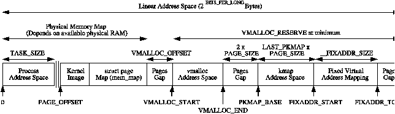
Figure 4.1: Kernel Address Space
8MiB (the amount of memory addressed by two PGDs) is reserved at PAGE_OFFSET for loading the kernel image to run. 8MiB is simply a reasonable amount of space to reserve for the purposes of loading the kernel image. The kernel image is placed in this reserved space during kernel page tables initialisation as discussed in Section 3.6.1. Somewhere shortly after the image, the mem_map for UMA architectures, as discussed in Chapter 2, is stored. The location of the array is usually at the 16MiB mark to avoid using ZONE_DMA but not always. With NUMA architectures, portions of the virtual mem_map will be scattered throughout this region and where they are actually located is architecture dependent.
The region between PAGE_OFFSET and VMALLOC_START - VMALLOC_OFFSET is the physical memory map and the size of the region depends on the amount of available RAM. As we saw in Section 3.6, page table entries exist to map physical memory to the virtual address range beginning at PAGE_OFFSET. Between the physical memory map and the vmalloc address space, there is a gap of space VMALLOC_OFFSET in size, which on the x86 is 8MiB, to guard against out of bounds errors. For illustration, on a x86 with 32MiB of RAM, VMALLOC_START will be located at PAGE_OFFSET + 0x02000000 + 0x00800000.
In low memory systems, the remaining amount of the virtual address space, minus a 2 page gap, is used by vmalloc() for representing non-contiguous memory allocations in a contiguous virtual address space. In high-memory systems, the vmalloc area extends as far as PKMAP_BASE minus the two page gap and two extra regions are introduced. The first, which begins at PKMAP_BASE, is an area reserved for the mapping of high memory pages into low memory with kmap() as discussed in Chapter 9. The second is for fixed virtual address mappings which extends from FIXADDR_START to FIXADDR_TOP. Fixed virtual addresses are needed for subsystems that need to know the virtual address at compile time such as the Advanced Programmable Interrupt Controller (APIC). FIXADDR_TOP is statically defined to be 0xFFFFE000 on the x86 which is one page before the end of the virtual address space. The size of the fixed mapping region is calculated at compile time in __FIXADDR_SIZE and used to index back from FIXADDR_TOP to give the start of the region FIXADDR_START
The region required for vmalloc(), kmap() and the fixed virtual address mapping is what limits the size of ZONE_NORMAL. As the running kernel needs these functions, a region of at least VMALLOC_RESERVE will be reserved at the top of the address space. VMALLOC_RESERVE is architecture specific but on the x86, it is defined as 128MiB. This is why ZONE_NORMAL is generally referred to being only 896MiB in size; it is the 1GiB of the upper potion of the linear address space minus the minimum 128MiB that is reserved for the vmalloc region.
The address space usable by the process is managed by a high level mm_struct which is roughly analogous to the vmspace struct in BSD [McK96].
Each address space consists of a number of page-aligned regions of memory that are in use. They never overlap and represent a set of addresses which contain pages that are related to each other in terms of protection and purpose. These regions are represented by a struct vm_area_struct and are roughly analogous to the vm_map_entry struct in BSD. For clarity, a region may represent the process heap for use with malloc(), a memory mapped file such as a shared library or a block of anonymous memory allocated with mmap(). The pages for this region may still have to be allocated, be active and resident or have been paged out.
If a region is backed by a file, its vm_file field will be set. By traversing vm_file→f_dentry→d_inode→i_mapping, the associated address_space for the region may be obtained. The address_space has all the filesystem specific information required to perform page-based operations on disk.
The relationship between the different address space related structures is illustraed in 4.2. A number of system calls are provided which affect the address space and regions. These are listed in Table ??.
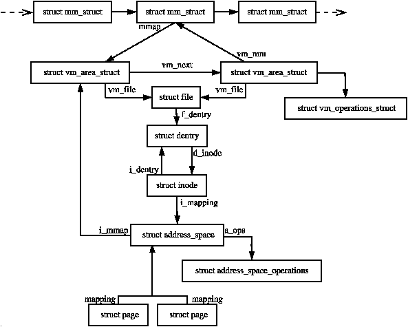
Figure 4.2: Data Structures related to the Address Space
System Call Description fork() Creates a new process with a new address space. All the pages are marked COW and are shared between the two processes until a page fault occurs to make private copies clone() clone() allows a new process to be created that shares parts of its context with its parent and is how threading is implemented in Linux. clone() without the CLONE_VM set will create a new address space which is essentially the same as fork() mmap() mmap() creates a new region within the process linear address space mremap() Remaps or resizes a region of memory. If the virtual address space is not available for the mapping, the region may be moved unless the move is forbidden by the caller. munmap() This destroys part or all of a region. If the region been unmapped is in the middle of an existing region, the existing region is split into two separate regions shmat() This attaches a shared memory segment to a process address space shmdt() Removes a shared memory segment from an address space execve() This loads a new executable file replacing the current address space exit() Destroys an address space and all regions
Table 4.1: System Calls Related to Memory Regions
The process address space is described by the mm_struct struct meaning that only one exists for each process and is shared between userspace threads. In fact, threads are identified in the task list by finding all task_structs which have pointers to the same mm_struct.
A unique mm_struct is not needed for kernel threads as they will never page fault or access the userspace portion. The only exception is page faulting within the vmalloc space. The page fault handling code treats this as a special case and updates the current page table with information in the the master page table. As a mm_struct is not needed for kernel threads, the task_struct→mm field for kernel threads is always NULL. For some tasks such as the boot idle task, the mm_struct is never setup but for kernel threads, a call to daemonize() will call exit_mm() to decrement the usage counter.
As TLB flushes are extremely expensive, especially with architectures such as the PPC, a technique called lazy TLB is employed which avoids unnecessary TLB flushes by processes which do not access the userspace page tables as the kernel portion of the address space is always visible. The call to switch_mm(), which results in a TLB flush, is avoided by “borrowing” the mm_struct used by the previous task and placing it in task_struct→active_mm. This technique has made large improvements to context switches times.
When entering lazy TLB, the function enter_lazy_tlb() is called to ensure that a mm_struct is not shared between processors in SMP machines, making it a NULL operation on UP machines. The second time use of lazy TLB is during process exit when start_lazy_tlb() is used briefly while the process is waiting to be reaped by the parent.
The struct has two reference counts called mm_users and mm_count for two types of “users”. mm_users is a reference count of processes accessing the userspace portion of for this mm_struct, such as the page tables and file mappings. Threads and the swap_out() code for instance will increment this count making sure a mm_struct is not destroyed early. When it drops to 0, exit_mmap() will delete all mappings and tear down the page tables before decrementing the mm_count.
mm_count is a reference count of the “anonymous users” for the mm_struct initialised at 1 for the “real” user. An anonymous user is one that does not necessarily care about the userspace portion and is just borrowing the mm_struct. Example users are kernel threads which use lazy TLB switching. When this count drops to 0, the mm_struct can be safely destroyed. Both reference counts exist because anonymous users need the mm_struct to exist even if the userspace mappings get destroyed and there is no point delaying the teardown of the page tables.
The mm_struct is defined in <linux/sched.h> as follows:
206 struct mm_struct {
207 struct vm_area_struct * mmap;
208 rb_root_t mm_rb;
209 struct vm_area_struct * mmap_cache;
210 pgd_t * pgd;
211 atomic_t mm_users;
212 atomic_t mm_count;
213 int map_count;
214 struct rw_semaphore mmap_sem;
215 spinlock_t page_table_lock;
216
217 struct list_head mmlist;
221
222 unsigned long start_code, end_code, start_data, end_data;
223 unsigned long start_brk, brk, start_stack;
224 unsigned long arg_start, arg_end, env_start, env_end;
225 unsigned long rss, total_vm, locked_vm;
226 unsigned long def_flags;
227 unsigned long cpu_vm_mask;
228 unsigned long swap_address;
229
230 unsigned dumpable:1;
231
232 /* Architecture-specific MM context */
233 mm_context_t context;
234 };
The meaning of each of the field in this sizeable struct is as follows:
There are a small number of functions for dealing with mm_structs. They are described in Table ??.
Table 4.2: Functions related to memory region descriptors
Two functions are provided to allocate a mm_struct. To be slightly confusing, they are essentially the same but with small important differences. allocate_mm() is just a preprocessor macro which allocates a mm_struct from the slab allocator (see Chapter 8). mm_alloc() allocates from slab and then calls mm_init() to initialise it.
The initial mm_struct in the system is called init_mm() and is statically initialised at compile time using the macro INIT_MM().
238 #define INIT_MM(name) \
239 { \
240 mm_rb: RB_ROOT, \
241 pgd: swapper_pg_dir, \
242 mm_users: ATOMIC_INIT(2), \
243 mm_count: ATOMIC_INIT(1), \
244 mmap_sem: __RWSEM_INITIALIZER(name.mmap_sem), \
245 page_table_lock: SPIN_LOCK_UNLOCKED, \
246 mmlist: LIST_HEAD_INIT(name.mmlist), \
247 }
Once it is established, new mm_structs are created using their parent mm_struct as a template. The function responsible for the copy operation is copy_mm() and it uses init_mm() to initialise process specific fields.
While a new user increments the usage count with atomic_inc(&mm->mm_users), it is decremented with a call to mmput(). If the mm_users count reaches zero, all the mapped regions are destroyed with exit_mmap() and the page tables destroyed as there is no longer any users of the userspace portions. The mm_count count is decremented with mmdrop() as all the users of the page tables and VMAs are counted as one mm_struct user. When mm_count reaches zero, the mm_struct will be destroyed.
The full address space of a process is rarely used, only sparse regions are. Each region is represented by a vm_area_struct which never overlap and represent a set of addresses with the same protection and purpose. Examples of a region include a read-only shared library loaded into the address space or the process heap. A full list of mapped regions a process has may be viewed via the proc interface at /proc/PID/maps where PID is the process ID of the process that is to be examined.
The region may have a number of different structures associated with it as illustrated in Figure 4.2. At the top, there is the vm_area_struct which on its own is enough to represent anonymous memory.
If the region is backed by a file, the struct file is available through the vm_file field which has a pointer to the struct inode. The inode is used to get the struct address_space which has all the private information about the file including a set of pointers to filesystem functions which perform the filesystem specific operations such as reading and writing pages to disk.
The struct vm_area_struct is declared as follows in <linux/mm.h>:
44 struct vm_area_struct {
45 struct mm_struct * vm_mm;
46 unsigned long vm_start;
47 unsigned long vm_end;
49
50 /* linked list of VM areas per task, sorted by address */
51 struct vm_area_struct *vm_next;
52
53 pgprot_t vm_page_prot;
54 unsigned long vm_flags;
55
56 rb_node_t vm_rb;
57
63 struct vm_area_struct *vm_next_share;
64 struct vm_area_struct **vm_pprev_share;
65
66 /* Function pointers to deal with this struct. */
67 struct vm_operations_struct * vm_ops;
68
69 /* Information about our backing store: */
70 unsigned long vm_pgoff;
72 struct file * vm_file;
73 unsigned long vm_raend;
74 void * vm_private_data;
75 };
Protection Flags Flags Description VM_READ Pages may be read VM_WRITE Pages may be written VM_EXEC Pages may be executed VM_SHARED Pages may be shared VM_DONTCOPY VMA will not be copied on fork VM_DONTEXPAND Prevents a region being resized. Flag is unused
madvise() Flags VM_SEQ_READ A hint that pages will be accessed sequentially VM_RAND_READ A hint stating that readahead in the region is useless
Figure 4.3: Memory Region Flags
All the regions are linked together on a linked list ordered by address via the vm_next field. When searching for a free area, it is a simple matter of traversing the list but a frequent operation is to search for the VMA for a particular address such as during page faulting for example. In this case, the red-black tree is traversed as it has O(logN) search time on average. The tree is ordered so that lower addresses than the current node are on the left leaf and higher addresses are on the right.
There are three operations which a VMA may support called open(), close() and nopage(). It supports these with a vm_operations_struct in the VMA called vma→vm_ops. The struct contains three function pointers and is declared as follows in <linux/mm.h>:
133 struct vm_operations_struct {
134 void (*open)(struct vm_area_struct * area);
135 void (*close)(struct vm_area_struct * area);
136 struct page * (*nopage)(struct vm_area_struct * area,
unsigned long address,
int unused);
137 };
The open() and close() functions are will be called every time a region is created or deleted. These functions are only used by a small number of devices, one filesystem and System V shared regions which need to perform additional operations when regions are opened or closed. For example, the System V open() callback will increment the number of VMAs using a shared segment (shp→shm_nattch).
The main operation of interest is the nopage() callback. This callback is used during a page-fault by do_no_page(). The callback is responsible for locating the page in the page cache or allocating a page and populating it with the required data before returning it.
Most files that are mapped will use a generic vm_operations_struct() called generic_file_vm_ops. It registers only a nopage() function called filemap_nopage(). This nopage() function will either locating the page in the page cache or read the information from disk. The struct is declared as follows in mm/filemap.c:
2243 static struct vm_operations_struct generic_file_vm_ops = {
2244 nopage: filemap_nopage,
2245 };
In the event the region is backed by a file, the vm_file leads to an associated address_space as shown in Figure 4.2. The struct contains information of relevance to the filesystem such as the number of dirty pages which must be flushed to disk. It is declared as follows in <linux/fs.h>:
406 struct address_space {
407 struct list_head clean_pages;
408 struct list_head dirty_pages;
409 struct list_head locked_pages;
410 unsigned long nrpages;
411 struct address_space_operations *a_ops;
412 struct inode *host;
413 struct vm_area_struct *i_mmap;
414 struct vm_area_struct *i_mmap_shared;
415 spinlock_t i_shared_lock;
416 int gfp_mask;
417 };
A brief description of each field is as follows:
Periodically the memory manager will need to flush information to disk. The memory manager does not know and does not care how information is written to disk, so the a_ops struct is used to call the relevant functions. It is declared as follows in <linux/fs.h>:
385 struct address_space_operations {
386 int (*writepage)(struct page *);
387 int (*readpage)(struct file *, struct page *);
388 int (*sync_page)(struct page *);
389 /*
390 * ext3 requires that a successful prepare_write() call be
391 * followed by a commit_write() call - they must be balanced
392 */
393 int (*prepare_write)(struct file *, struct page *,
unsigned, unsigned);
394 int (*commit_write)(struct file *, struct page *,
unsigned, unsigned);
395 /* Unfortunately this kludge is needed for FIBMAP.
* Don't use it */
396 int (*bmap)(struct address_space *, long);
397 int (*flushpage) (struct page *, unsigned long);
398 int (*releasepage) (struct page *, int);
399 #define KERNEL_HAS_O_DIRECT
400 int (*direct_IO)(int, struct inode *, struct kiobuf *,
unsigned long, int);
401 #define KERNEL_HAS_DIRECT_FILEIO
402 int (*direct_fileIO)(int, struct file *, struct kiobuf *,
unsigned long, int);
403 void (*removepage)(struct page *);
404 };
These fields are all function pointers which are described as follows;
The system call mmap() is provided for creating new memory regions within a process. For the x86, the function calls sys_mmap2() which calls do_mmap2() directly with the same parameters. do_mmap2() is responsible for acquiring the parameters needed by do_mmap_pgoff(), which is the principle function for creating new areas for all architectures.
do_mmap2() first clears the MAP_DENYWRITE and MAP_EXECUTABLE bits from the flags parameter as they are ignored by Linux, which is confirmed by the mmap() manual page. If a file is being mapped, do_mmap2() will look up the struct file based on the file descriptor passed as a parameter and acquire the mm_struct→mmap_sem semaphore before calling do_mmap_pgoff().
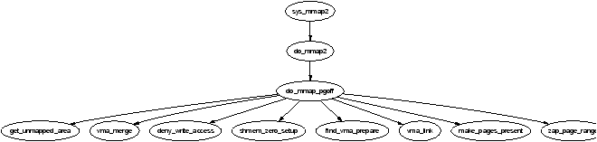
Figure 4.4: Call Graph: sys_mmap2()
do_mmap_pgoff() begins by performing some basic sanity checks. It first checks the appropriate filesystem or device functions are available if a file or device is being mapped. It then ensures the size of the mapping is page aligned and that it does not attempt to create a mapping in the kernel portion of the address space. It then makes sure the size of the mapping does not overflow the range of pgoff and finally that the process does not have too many mapped regions already.
This rest of the function is large but broadly speaking it takes the following steps:
A common operation is to find the VMA a particular address belongs to, such as during operations like page faulting, and the function responsible for this is find_vma(). The function find_vma() and other API functions affecting memory regions are listed in Table 4.3.
It first checks the mmap_cache field which caches the result of the last call to find_vma() as it is quite likely the same region will be needed a few times in succession. If it is not the desired region, the red-black tree stored in the mm_rb field is traversed. If the desired address is not contained within any VMA, the function will return the VMA closest to the requested address so it is important callers double check to ensure the returned VMA contains the desired address.
A second function called find_vma_prev() is provided which is functionally the same as find_vma() except that it also returns a pointer to the VMA preceding the desired VMA which is required as the list is a singly linked list. find_vma_prev() is rarely used but notably, it is used when two VMAs are being compared to determine if they may be merged. It is also used when removing a memory region so that the singly linked list may be updated.
The last function of note for searching VMAs is find_vma_intersection() which is used to find a VMA which overlaps a given address range. The most notable use of this is during a call to do_brk() when a region is growing up. It is important to ensure that the growing region will not overlap an old region.
Table 4.3: Memory Region VMA API
When a new area is to be memory mapped, a free region has to be found that is large enough to contain the new mapping. The function responsible for finding a free area is get_unmapped_area().
As the call graph in Figure 4.5 indicates, there is little work involved with finding an unmapped area. The function is passed a number of parameters. A struct file is passed representing the file or device to be mapped as well as pgoff which is the offset within the file that is been mapped. The requested address for the mapping is passed as well as its length. The last parameter is the protection flags for the area.
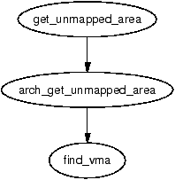
Figure 4.5: Call Graph: get_unmapped_area()
If a device is being mapped, such as a video card, the associated
f_op→get_unmapped_area() is used. This is because devices or files may have additional requirements for mapping that generic code can not be aware of, such as the address having to be aligned to a particular virtual address.
If there are no special requirements, the architecture specific function
arch_get_unmapped_area() is called. Not all architectures provide their own function. For those that don't, there is a generic version provided in mm/mmap.c.
The principal function for inserting a new memory region is insert_vm_struct() whose call graph can be seen in Figure 4.6. It is a very simple function which first calls find_vma_prepare() to find the appropriate VMAs the new region is to be inserted between and the correct nodes within the red-black tree. It then calls __vma_link() to do the work of linking in the new VMA.
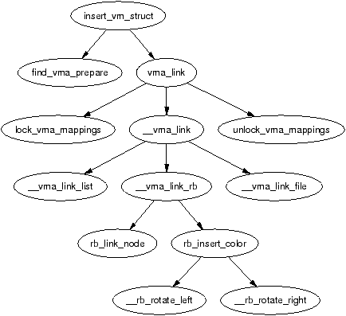
Figure 4.6: Call Graph: insert_vm_struct()
The function insert_vm_struct() is rarely used as it does not increase the map_count field. Instead, the function commonly used is __insert_vm_struct() which performs the same tasks except that it increments map_count.
Two varieties of linking functions are provided, vma_link() and __vma_link(). vma_link() is intended for use when no locks are held. It will acquire all the necessary locks, including locking the file if the VMA is a file mapping before calling __vma_link() which places the VMA in the relevant lists.
It is important to note that many functions do not use the insert_vm_struct() functions but instead prefer to call find_vma_prepare() themselves followed by a later vma_link() to avoid having to traverse the tree multiple times.
The linking in __vma_link() consists of three stages which are contained in three separate functions. __vma_link_list() inserts the VMA into the linear, singly linked list. If it is the first mapping in the address space (i.e. prev is NULL), it will become the red-black tree root node. The second stage is linking the node into the red-black tree with __vma_link_rb(). The final stage is fixing up the file share mapping with __vma_link_file() which basically inserts the VMA into the linked list of VMAs via the vm_pprev_share and vm_next_share fields.
Linux used to have a function called merge_segments() [Hac02] which was responsible for merging adjacent regions of memory together if the file and permissions matched. The objective was to remove the number of VMAs required, especially as many operations resulted in a number of mappings been created such as calls to sys_mprotect(). This was an expensive operation as it could result in large portions of the mappings been traversed and was later removed as applications, especially those with many mappings, spent a long time in merge_segments().
The equivalent function which exists now is called vma_merge() and it is only used in two places. The first is user is sys_mmap() which calls it if an anonymous region is being mapped, as anonymous regions are frequently mergable. The second time is during do_brk() which is expanding one region into a newly allocated one where the two regions should be merged. Rather than merging two regions, the function vma_merge() checks if an existing region may be expanded to satisfy the new allocation negating the need to create a new region. A region may be expanded if there are no file or device mappings and the permissions of the two areas are the same.
Regions are merged elsewhere, although no function is explicitly called to perform the merging. The first is during a call to sys_mprotect() during the fixup of areas where the two regions will be merged if the two sets of permissions are the same after the permissions in the affected region change. The second is during a call to move_vma() when it is likely that similar regions will be located beside each other.
mremap() is a system call provided to grow or shrink an existing memory mapping. This is implemented by the function sys_mremap() which may move a memory region if it is growing or it would overlap another region and MREMAP_FIXED is not specified in the flags. The call graph is illustrated in Figure 4.7.
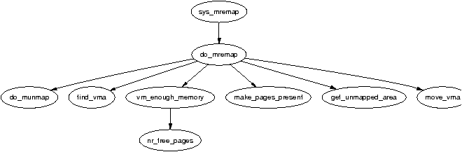
Figure 4.7: Call Graph: sys_mremap()
If a region is to be moved, do_mremap() first calls get_unmapped_area() to find a region large enough to contain the new resized mapping and then calls move_vma() to move the old VMA to the new location. See Figure 4.8 for the call graph to move_vma().
Figure 4.8: Call Graph: move_vma()
First move_vma() checks if the new location may be merged with the VMAs adjacent to the new location. If they can not be merged, a new VMA is allocated literally one PTE at a time. Next move_page_tables() is called(see Figure 4.9 for its call graph) which copies all the page table entries from the old mapping to the new one. While there may be better ways to move the page tables, this method makes error recovery trivial as backtracking is relatively straight forward.
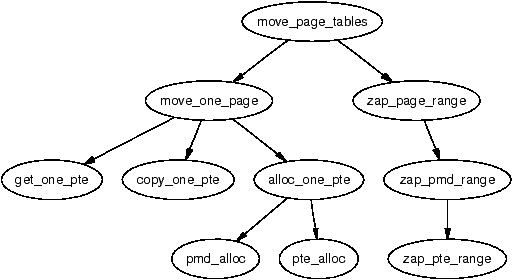
Figure 4.9: Call Graph: move_page_tables()
The contents of the pages are not copied. Instead, zap_page_range() is called to swap out or remove all the pages from the old mapping and the normal page fault handling code will swap the pages back in from backing storage or from files or will call the device specific do_nopage() function.
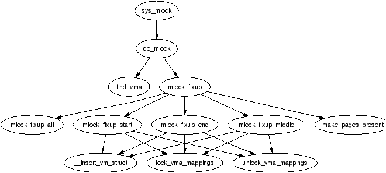
Figure 4.10: Call Graph: sys_mlock()
Linux can lock pages from an address range into memory via the system call mlock() which is implemented by sys_mlock() whose call graph is shown in Figure 4.10. At a high level, the function is simple; it creates a VMA for the address range to be locked, sets the VM_LOCKED flag on it and forces all the pages to be present with make_pages_present(). A second system call mlockall() which maps to sys_mlockall() is also provided which is a simple extension to do the same work as sys_mlock() except for every VMA on the calling process. Both functions rely on the core function do_mlock() to perform the real work of finding the affected VMAs and deciding what function is needed to fix up the regions as described later.
There are some limitations to what memory may be locked. The address range must be page aligned as VMAs are page aligned. This is addressed by simply rounding the range up to the nearest page aligned range. The second proviso is that the process limit RLIMIT_MLOCK imposed by the system administrator may not be exceeded. The last proviso is that each process may only lock half of physical memory at a time. This is a bit non-functional as there is nothing to stop a process forking a number of times and each child locking a portion but as only root processes are allowed to lock pages, it does not make much difference. It is safe to presume that a root process is trusted and knows what it is doing. If it does not, the system administrator with the resulting broken system probably deserves it and gets to keep both parts of it.
The system calls munlock() and munlockall() provide the corollary for the locking functions and map to sys_munlock() and sys_munlockall() respectively. The functions are much simpler than the locking functions as they do not have to make numerous checks. They both rely on the same do_mmap() function to fix up the regions.
When locking or unlocking, VMAs will be affected in one of four ways, each of which must be fixed up by mlock_fixup(). The locking may affect the whole VMA in which case mlock_fixup_all() is called. The second condition, handled by mlock_fixup_start(), is where the start of the region is locked, requiring that a new VMA be allocated to map the new area. The third condition, handled by mlock_fixup_end(), is predictably enough where the end of the region is locked. Finally, mlock_fixup_middle() handles the case where the middle of a region is mapped requiring two new VMAs to be allocated.
It is interesting to note that VMAs created as a result of locking are never merged, even when unlocked. It is presumed that processes which lock regions will need to lock the same regions over and over again and it is not worth the processor power to constantly merge and split regions.
The function responsible for deleting memory regions, or parts thereof, is do_munmap(). It is a relatively simple operation in comparison to the other memory region related operations and is basically divided up into three parts. The first is to fix up the red-black tree for the region that is about to be unmapped. The second is to release the pages and PTEs related to the region to be unmapped and the third is to fix up the regions if a hole has been generated.
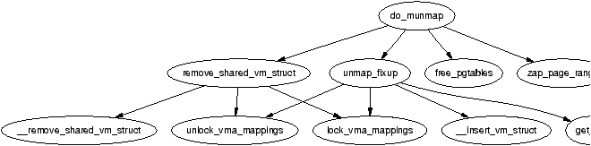
Figure 4.11: Call Graph: do_munmap()
To ensure the red-black tree is ordered correctly, all VMAs to be affected by the unmap are placed on a linked list called free and then deleted from the red-black tree with rb_erase(). The regions if they still exist will be added with their new addresses later during the fixup.
Next the linked list VMAs on free is walked through and checked to ensure it is not a partial unmapping. Even if a region is just to be partially unmapped, remove_shared_vm_struct() is still called to remove the shared file mapping. Again, if this is a partial unmapping, it will be recreated during fixup. zap_page_range() is called to remove all the pages associated with the region about to be unmapped before unmap_fixup() is called to handle partial unmappings.
Lastly free_pgtables() is called to try and free up all the page table entries associated with the unmapped region. It is important to note that the page table entry freeing is not exhaustive. It will only unmap full PGD directories and their entries so for example, if only half a PGD was used for the mapping, no page table entries will be freed. This is because a finer grained freeing of page table entries would be too expensive to free up data structures that are both small and likely to be used again.
During process exit, it is necessary to unmap all VMAs associated with a mm_struct. The function responsible is exit_mmap(). It is a very simply function which flushes the CPU cache before walking through the linked list of VMAs, unmapping each of them in turn and freeing up the associated pages before flushing the TLB and deleting the page table entries. It is covered in detail in the Code Commentary.
A very important part of VM is how kernel address space exceptions that are not bugs are caught1. This section does not cover the exceptions that are raised with errors such as divide by zero, we are only concerned with the exception raised as the result of a page fault. There are two situations where a bad reference may occur. The first is where a process sends an invalid pointer to the kernel via a system call which the kernel must be able to safely trap as the only check made initially is that the address is below PAGE_OFFSET. The second is where the kernel uses copy_from_user() or copy_to_user() to read or write data from userspace.
At compile time, the linker creates an exception table in the __ex_table section of the kernel code segment which starts at __start___ex_table and ends at __stop___ex_table. Each entry is of type exception_table_entry which is a pair consisting of an execution point and a fixup routine. When an exception occurs that the page fault handler cannot manage, it calls search_exception_table() to see if a fixup routine has been provided for an error at the faulting instruction. If module support is compiled, each modules exception table will also be searched.
If the address of the current exception is found in the table, the corresponding location of the fixup code is returned and executed. We will see in Section 4.7 how this is used to trap bad reads and writes to userspace.
Pages in the process linear address space are not necessarily resident in memory. For example, allocations made on behalf of a process are not satisfied immediately as the space is just reserved within the vm_area_struct. Other examples of non-resident pages include the page having been swapped out to backing storage or writing a read-only page.
Linux, like most operating systems, has a Demand Fetch policy as its fetch policy for dealing with pages that are not resident. This states that the page is only fetched from backing storage when the hardware raises a page fault exception which the operating system traps and allocates a page. The characteristics of backing storage imply that some sort of page prefetching policy would result in less page faults [MM87] but Linux is fairly primitive in this respect. When a page is paged in from swap space, a number of pages after it, up to 2page_cluster are read in by swapin_readahead() and placed in the swap cache. Unfortunately there is only a chance that pages likely to be used soon will be adjacent in the swap area making it a poor prepaging policy. Linux would likely benefit from a prepaging policy that adapts to program behaviour [KMC02].
There are two types of page fault, major and minor faults. Major page faults occur when data has to be read from disk which is an expensive operation, else the fault is referred to as a minor, or soft page fault. Linux maintains statistics on the number of these types of page faults with the task_struct→maj_flt and task_struct→min_flt fields respectively.
The page fault handler in Linux is expected to recognise and act on a number of different types of page faults listed in Table 4.4 which will be discussed in detail later in this chapter.
Table 4.4: Reasons For Page Faulting
Each architecture registers an architecture-specific function for the handling of page faults. While the name of this function is arbitrary, a common choice is do_page_fault() whose call graph for the x86 is shown in Figure 4.12.
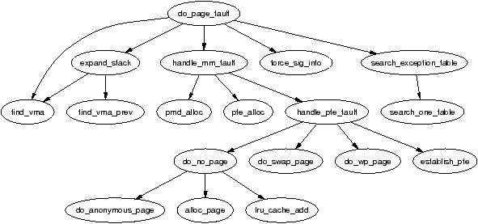
Figure 4.12: Call Graph: do_page_fault()
This function is provided with a wealth of information such as the address of the fault, whether the page was simply not found or was a protection error, whether it was a read or write fault and whether it is a fault from user or kernel space. It is responsible for determining which type of fault has occurred and how it should be handled by the architecture-independent code. The flow chart, in Figure 4.13, shows broadly speaking what this function does. In the figure, identifiers with a colon after them corresponds to the label as shown in the code.
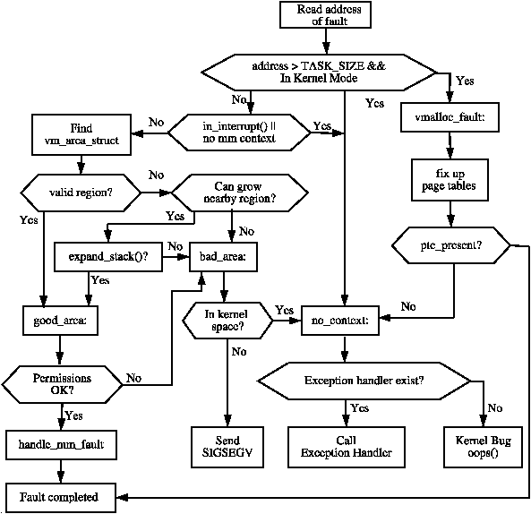
Figure 4.13: do_page_fault() Flow Diagram
handle_mm_fault() is the architecture independent top level function for faulting in a page from backing storage, performing COW and so on. If it returns 1, it was a minor fault, 2 was a major fault, 0 sends a SIGBUS error and any other value invokes the out of memory handler.
Once the exception handler has decided the fault is a valid page fault in a valid memory region, the architecture-independent function handle_mm_fault(), whose call graph is shown in Figure 4.14, takes over. It allocates the required page table entries if they do not already exist and calls handle_pte_fault().
Based on the properties of the PTE, one of the handler functions shown in Figure 4.14 will be used. The first stage of the decision is to check if the PTE is marked not present or if it has been allocated with which is checked by pte_present() and pte_none(). If no PTE has been allocated (pte_none() returned true), do_no_page() is called which handles Demand Allocation. Otherwise it is a page that has been swapped out to disk and do_swap_page() performs Demand Paging. There is a rare exception where swapped out pages belonging to a virtual file are handled by do_no_page(). This particular case is covered in Section 12.4.
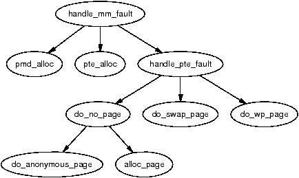
Figure 4.14: Call Graph: handle_mm_fault()
The second option is if the page is being written to. If the PTE is write protected, then do_wp_page() is called as the page is a Copy-On-Write (COW) page. A COW page is one which is shared between multiple processes(usually a parent and child) until a write occurs after which a private copy is made for the writing process. A COW page is recognised because the VMA for the region is marked writable even though the individual PTE is not. If it is not a COW page, the page is simply marked dirty as it has been written to.
The last option is if the page has been read and is present but a fault still occurred. This can occur with some architectures that do not have a three level page table. In this case, the PTE is simply established and marked young.
When a process accesses a page for the very first time, the page has to be allocated and possibly filled with data by the do_no_page() function. If the vm_operations_struct associated with the parent VMA (vma→vm_ops) provides a nopage() function, it is called. This is of importance to a memory mapped device such as a video card which needs to allocate the page and supply data on access or to a mapped file which must retrieve its data from backing storage. We will first discuss the case where the faulting page is anonymous as this is the simpliest case.
If vm_area_struct→vm_ops field is not filled or a nopage() function is not supplied, the function do_anonymous_page() is called to handle an anonymous access. There are only two cases to handle, first time read and first time write. As it is an anonymous page, the first read is an easy case as no data exists. In this case, the system-wide empty_zero_page, which is just a page of zeros, is mapped for the PTE and the PTE is write protected. The write protection is set so that another page fault will occur if the process writes to the page. On the x86, the global zero-filled page is zerod out in the function mem_init().
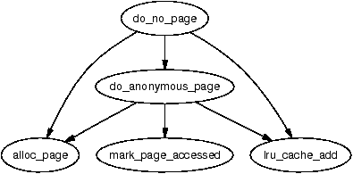
Figure 4.15: Call Graph: do_no_page()
If this is the first write to the page alloc_page() is called to allocate a free page (see Chapter 6) and is zero filled by clear_user_highpage(). Assuming the page was successfully allocated, the Resident Set Size (RSS) field in the mm_struct will be incremented; flush_page_to_ram() is called as required when a page has been inserted into a userspace process by some architectures to ensure cache coherency. The page is then inserted on the LRU lists so it may be reclaimed later by the page reclaiming code. Finally the page table entries for the process are updated for the new mapping.
If backed by a file or device, a nopage() function will be provided within the VMAs vm_operations_struct. In the file-backed case, the function filemap_nopage() is frequently the nopage() function for allocating a page and reading a page-sized amount of data from disk. Pages backed by a virtual file, such as those provided by shmfs, will use the function shmem_nopage() (See Chapter 12). Each device driver provides a different nopage() whose internals are unimportant to us here as long as it returns a valid struct page to use.
On return of the page, a check is made to ensure a page was successfully allocated and appropriate errors returned if not. A check is then made to see if an early COW break should take place. An early COW break will take place if the fault is a write to the page and the VM_SHARED flag is not included in the managing VMA. An early break is a case of allocating a new page and copying the data across before reducing the reference count to the page returned by the nopage() function.
In either case, a check is then made with pte_none() to ensure there is not a PTE already in the page table that is about to be used. It is possible with SMP that two faults would occur for the same page at close to the same time and as the spinlocks are not held for the full duration of the fault, this check has to be made at the last instant. If there has been no race, the PTE is assigned, statistics updated and the architecture hooks for cache coherency called.
When a page is swapped out to backing storage, the function do_swap_page() is responsible for reading the page back in, with the exception of virtual files which are covered in Section 12. The information needed to find it is stored within the PTE itself. The information within the PTE is enough to find the page in swap. As pages may be shared between multiple processes, they can not always be swapped out immediately. Instead, when a page is swapped out, it is placed within the swap cache.
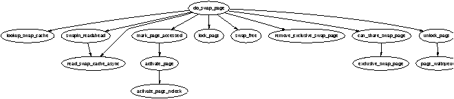
Figure 4.16: Call Graph: do_swap_page()
A shared page can not be swapped out immediately because there is no way of mapping a struct page to the PTEs of each process it is shared between. Searching the page tables of all processes is simply far too expensive. It is worth noting that the late 2.5.x kernels and 2.4.x with a custom patch have what is called Reverse Mapping (RMAP) which is discussed at the end of the chapter.
With the swap cache existing, it is possible that when a fault occurs it still exists in the swap cache. If it is, the reference count to the page is simply increased and it is placed within the process page tables again and registers as a minor page fault.
If the page exists only on disk swapin_readahead() is called which reads in the requested page and a number of pages after it. The number of pages read in is determined by the variable page_cluster defined in mm/swap.c. On low memory machines with less than 16MiB of RAM, it is initialised as 2 or 3 otherwise. The number of pages read in is 2page_cluster unless a bad or empty swap entry is encountered. This works on the premise that a seek is the most expensive operation in time so once the seek has completed, the succeeding pages should also be read in.
Once upon time, the full parent address space was duplicated for a child when a process forked. This was an extremely expensive operation as it is possible a significant percentage of the process would have to be swapped in from backing storage. To avoid this considerable overhead, a technique called Copy-On-Write (COW) is employed.
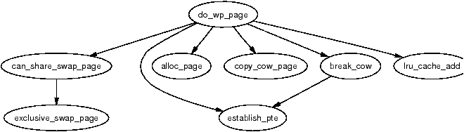
Figure 4.17: Call Graph: do_wp_page()
During fork, the PTEs of the two processes are made read-only so that when a write occurs there will be a page fault. Linux recognises a COW page because even though the PTE is write protected, the controlling VMA shows the region is writable. It uses the function do_wp_page() to handle it by making a copy of the page and assigning it to the writing process. If necessary, a new swap slot will be reserved for the page. With this method, only the page table entries have to be copied during a fork.
It is not safe to access memory in the process address space directly as there is no way to quickly check if the page addressed is resident or not. Linux relies on the MMU to raise exceptions when the address is invalid and have the Page Fault Exception handler catch the exception and fix it up. In the x86 case, assembler is provided by the __copy_user() to trap exceptions where the address is totally useless. The location of the fixup code is found when the function search_exception_table() is called. Linux provides an ample API (mainly macros) for copying data to and from the user address space safely as shown in Table 4.5.
Table 4.5: Accessing Process Address Space API
All the macros map on to assembler functions which all follow similar patterns of implementation so for illustration purposes, we'll just trace how copy_from_user() is implemented on the x86.
If the size of the copy is known at compile time, copy_from_user() calls __constant_copy_from_user() else __generic_copy_from_user() is used. If the size is known, there are different assembler optimisations to copy data in 1, 2 or 4 byte strides otherwise the distinction between the two copy functions is not important.
The generic copy function eventually calls the function __copy_user_zeroing() in <asm-i386/uaccess.h> which has three important parts. The first part is the assembler for the actual copying of size number of bytes from userspace. If any page is not resident, a page fault will occur and if the address is valid, it will get swapped in as normal. The second part is “fixup” code and the third part is the __ex_table mapping the instructions from the first part to the fixup code in the second part.
These pairings, as described in Section 4.5, copy the location of the copy instructions and the location of the fixup code the kernel exception handle table by the linker. If an invalid address is read, the function do_page_fault() will fall through, call search_exception_table() and find the EIP where the faulty read took place and jump to the fixup code which copies zeros into the remaining kernel space, fixes up registers and returns. In this manner, the kernel can safely access userspace with no expensive checks and letting the MMU hardware handle the exceptions.
All the other functions that access userspace follow a similar pattern.
The linear address space remains essentially the same as 2.4 with no modifications that cannot be easily recognised. The main change is the addition of a new page usable from userspace that has been entered into the fixed address virtual mappings. On the x86, this page is located at 0xFFFFF000 and called the vsyscall page. Code is located at this page which provides the optimal method for entering kernel-space from userspace. A userspace program now should use call 0xFFFFF000 instead of the traditional int 0x80 when entering kernel space.
This struct has not changed significantly. The first change is the addition of a free_area_cache field which is initialised as TASK_UNMAPPED_BASE. This field is used to remember where the first hole is in the linear address space to improve search times. A small number of fields have been added at the end of the struct which are related to core dumping and beyond the scope of this book.
This struct also has not changed significantly. The main differences is that the vm_next_share and vm_pprev_share has been replaced with a proper linked list with a new field called simply shared. The vm_raend has been removed altogether as file readahead is implemented very differently in 2.6. Readahead is mainly managed by a struct file_ra_state struct stored in struct file→f_ra. How readahead is implemented is described in a lot of detail in mm/readahead.c.
The first change is relatively minor. The gfp_mask field has been replaced with a flags field where the first __GFP_BITS_SHIFT bits are used as the gfp_mask and accessed with mapping_gfp_mask(). The remaining bits are used to store the status of asynchronous IO. The two flags that may be set are AS_EIO to indicate an IO error and AS_ENOSPC to indicate the filesystem ran out of space during an asynchronous write.
This struct has a number of significant additions, mainly related to the page cache and file readahead. As the fields are quite unique, we'll introduce them in detail:
Most of the changes to this struct initially look quite simple but are actually quite involved. The changed fields are:
The operation of mmap() has two important changes. The first is that it is possible for security modules to register a callback. This callback is called security_file_mmap() which looks up a security_ops struct for the relevant function. By default, this will be a NULL operation.
The second is that there is much stricter address space accounting code in place. vm_area_structs which are to be accounted will have the VM_ACCOUNT flag set, which will be all userspace mappings. When userspace regions are created or destroyed, the functions vm_acct_memory() and vm_unacct_memory() update the variable vm_committed_space. This gives the kernel a much better view of how much memory has been committed to userspace.
One limitation that exists for the 2.4.x kernels is that the kernel has only 1GiB of virtual address space available which is visible to all processes. At time of writing, a patch has been developed by Ingo Molnar2 which allows the kernel to optionally have it's own full 4GiB address space. The patches are available from http://redhat.com/ mingo/4g-patches/ and are included in the -mm test trees but it is unclear if it will be merged into the mainstream or not.
This feature is intended for 32 bit systems that have very large amounts (> 16GiB) of RAM. The traditional 3/1 split adequately supports up to 1GiB of RAM. After that, high-memory support allows larger amounts to be supported by temporarily mapping high-memory pages but with more RAM, this forms a significant bottleneck. For example, as the amount of physical RAM approached the 60GiB range, almost the entire of low memory is consumed by mem_map. By giving the kernel it's own 4GiB virtual address space, it is much easier to support the memory but the serious penalty is that there is a per-syscall TLB flush which heavily impacts performance.
With the patch, there is only a small 16MiB region of memory shared between userspace and kernelspace which is used to store the GDT, IDT, TSS, LDT, vsyscall page and the kernel stack. The code for doing the actual switch between the pagetables is then contained in the trampoline code for entering/existing kernelspace. There are a few changes made to the core core such as the removal of direct pointers for accessing userspace buffers but, by and large, the core kernel is unaffected by this patch.
In 2.4, a VMA backed by a file is populated in a linear fashion. This can be optionally changed in 2.6 with the introduction of the MAP_POPULATE flag to mmap() and the new system call remap_file_pages(), implemented by sys_remap_file_pages(). This system call allows arbitrary pages in an existing VMA to be remapped to an arbitrary location on the backing file by manipulating the page tables.
On page-out, the non-linear address for the file is encoded within the PTE so that it can be installed again correctly on page fault. How it is encoded is architecture specific so two macros are defined called pgoff_to_pte() and pte_to_pgoff() for the task.
This feature is largely of benefit to applications with a large number of mappings such as database servers and virtualising applications such as emulators. It was introduced for a number of reasons. First, VMAs are per-process and can have considerable space requirements, especially for applications with a large number of mappings. Second, the search get_unmapped_area() uses for finding a free area in the virtual address space is a linear search which is very expensive for large numbers of mappings. Third, non-linear mappings will prefault most of the pages into memory where as normal mappings may cause a major fault for each page although can be avoided by using the new flag MAP_POPULATE flag with mmap() or my using mlock(). The last reason is to avoid sparse mappings which, at worst case, would require one VMA for every file page mapped.
However, this feature is not without some serious drawbacks. The first is that the system calls truncate() and mincore() are broken with respect to non-linear mappings. Both system calls depend depend on vm_area_struct→vm_pgoff which is meaningless for non-linear mappings. If a file mapped by a non-linear mapping is truncated, the pages that exists within the VMA will still remain. It has been proposed that the proper solution is to leave the pages in memory but make them anonymous but at the time of writing, no solution has been implemented.
The second major drawback is TLB invalidations. Each remapped page will require that the MMU be told the remapping took place with flush_icache_page() but the more important penalty is with the call to flush_tlb_page(). Some processors are able to invalidate just the TLB entries related to the page but other processors implement this by flushing the entire TLB. If re-mappings are frequent, the performance will degrade due to increased TLB misses and the overhead of constantly entering kernel space. In some ways, these penalties are the worst as the impact is heavily processor dependant.
It is currently unclear what the future of this feature, if it remains, will be. At the time of writing, there is still on-going arguments on how the issues with the feature will be fixed but it is likely that non-linear mappings are going to be treated very differently to normal mappings with respect to pageout, truncation and the reverse mapping of pages. As the main user of this feature is likely to be databases, this special treatment is not likely to be a problem.
The changes to the page faulting routines are more cosmetic than anything else other than the necessary changes to support reverse mapping and PTEs in high memory. The main cosmetic change is that the page faulting routines return self explanatory compile time definitions rather than magic numbers. The possible return values for handle_mm_fault() are VM_FAULT_MINOR, VM_FAULT_MAJOR, VM_FAULT_SIGBUS and VM_FAULT_OOM.